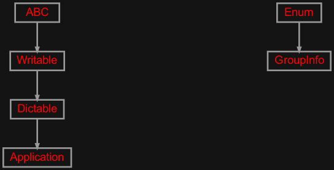
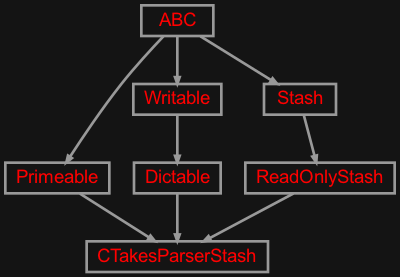
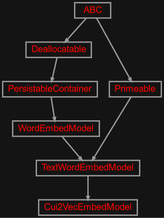
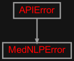
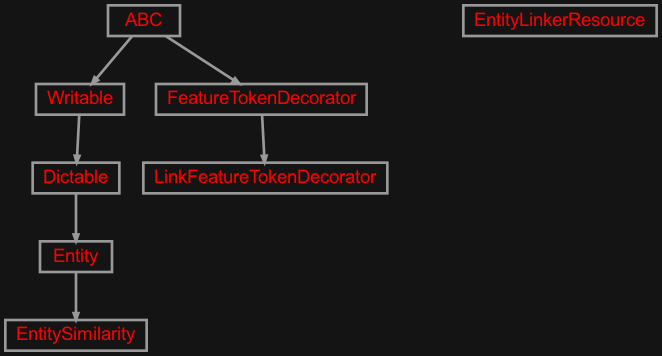
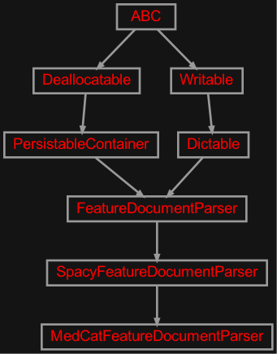
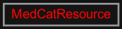
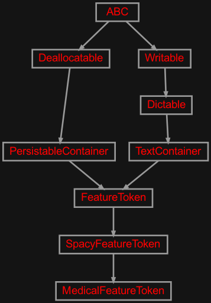
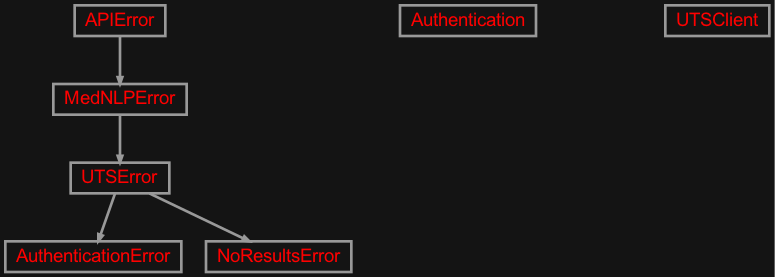

zensols.mednlp package#
Submodules#
zensols.mednlp.app#

A natural language medical domain parsing library.
- class zensols.mednlp.app.Application(config_factory, doc_parser, library)[source]#
Bases:
DictableA natural language medical domain parsing library.
- __init__(config_factory, doc_parser, library)#
- atom(cui)[source]#
Search the UMLS database using UTS and show results.
- Parameters:
cui (
str) – the concept ID to search for (eg ‘C0242379’)
-
config_factory:
ConfigFactory# Used to create a cTAKES stash.
- define(cui)[source]#
Look up an entity by CUI. This takes a long time.
- Parameters:
cui (
str) – the concept ID to search for (eg ‘C0242379’)
-
doc_parser:
FeatureDocumentParser# Parses and NER tags medical terms.
- features(text_or_file, out=None, ids=None, only_medical=False)[source]#
Dump features as CSV output.
-
library:
MedicalLibrary# Medical resource library that contains UMLS access, cui2vec etc..
- search(term)[source]#
Search the UMLS database using UTS and show results.
- Parameters:
term (
str) – the term to search for (eg ‘lung cancer’)
zensols.mednlp.cli#

Command line entry point to the application.
- class zensols.mednlp.cli.ApplicationFactory(*args, **kwargs)[source]#
Bases:
ApplicationFactory
zensols.mednlp.ctakes#

Parse and normalize discharge notes.
- class zensols.mednlp.ctakes.CTakesParserStash(entry_point_bin, entry_point_cmd, home, source_dir, output_dir=None)[source]#
Bases:
ReadOnlyStash,Primeable,DictableRuns the cTAKES CUI entity linker on a directory of medical notes. For each medical text file, it generates an
xmifile, which is then parsed by the thectakes_parserlibrary.This straightforward wrapper around the
ctparserlibrary automates the file system orchestration that needs to happen. Configure an instance of this class as an application configuration and use aImportConfigFactoryto create the objects. See theexamples/ctakesdirectory for a quick start guide on how to use this class.- __init__(entry_point_bin, entry_point_cmd, home, source_dir, output_dir=None)#
- clear()[source]#
Delete all data from the from the stash.
Important: Exercise caution with this method, of course.
- exists(name)[source]#
Return
Trueif data with keynameexists.Implementation note: This
Stash.exists()method is very inefficient and should be overriden.- Return type:
- load(name)[source]#
Load a data value from the pickled data with key
name. Semantically, this method loads the using the stash’s implementation. For exampleDirectoryStashloads the data from a file if it exists, but factory type stashes will always re-generate the data.- See:
get()- Return type:
zensols.mednlp.cui2vec#

This module contains the embedding subclass for cui2vec embeddings.
- class zensols.mednlp.cui2vec.Cui2VecEmbedModel(name, cache=True, lowercase=False, path=None, installer=None, resource=None, dimension=500, vocab_size=109053)[source]#
Bases:
TextWordEmbedModelThis class uses the pretrained cui2vec embeddings.
- __init__(name, cache=True, lowercase=False, path=None, installer=None, resource=None, dimension=500, vocab_size=109053)#
zensols.mednlp.domain#

Contains the classes for the medical token type and others.
zensols.mednlp.entlink#

Contains the classes for the medical token type and others.
- class zensols.mednlp.entlink.Entity(sci_spacy_entity)[source]#
Bases:
DictableA convenience container class that Wraps a SciSpacy entity.
- __init__(sci_spacy_entity)#
-
sci_spacy_entity:
Entity# The entity identified by
scispacy.linking_utils.
- class zensols.mednlp.entlink.EntityLinkerResource(params=<factory>, cache_global=True)[source]#
Bases:
objectProvides a way resolve
scispacy.linking_utils.Entityinstances from CUIs.- See:
- __init__(params=<factory>, cache_global=True)#
-
cache_global:
InitVar= True# Whether or not to globally cache resources, which saves load time.
- property linker: EntityLinker#
The ScispaCy entity linker.
- class zensols.mednlp.entlink.EntitySimilarity(sci_spacy_entity, similiarty)[source]#
Bases:
EntityA similarity measure of a medical concept in cui2vec.
- See:
MedCatFeatureDocumentParser.similarity_by_term()
- __init__(sci_spacy_entity, similiarty)#
- class zensols.mednlp.entlink.LinkFeatureTokenDecorator(lib=None)[source]#
Bases:
FeatureTokenDecoratorAdds linked SciSpacy definitions to tokens using the
MedicalLibrary.- __init__(lib=None)#
-
lib:
MedicalLibrary= None# The medical library used for linking entities.
zensols.mednlp.lib#
Medical resource library that contains UMLS access, cui2vec etc..
- class zensols.mednlp.lib.MedicalLibrary(config_factory=None, medcat_resource=None, entity_linker_resource=None, uts_client=None)[source]#
Bases:
objectA utility class that provides access to medical APIs.
- __init__(config_factory=None, medcat_resource=None, entity_linker_resource=None, uts_client=None)#
- config_factory: ConfigFactory = None#
The configuration factory used to create cTAKES and cui2vec instances.
- property cui2vec_embedding: Cui2VecEmbedModel#
The cui2vec embedding model.
- entity_linker_resource: EntityLinkerResource = None#
The entity linker resource.
- get_linked_entity(cui)[source]#
Get a scispaCy linked entity.
- Parameters:
cui (str) – the unique concept ID
- Return type:
Entity
- get_new_ctakes_parser_stash()[source]#
Return a new instance of a ctakes parser stash.
- Return type:
CTakesParserStash
- medcat_resource: MedCatResource = None#
The MedCAT factory resource.
- similarity_by_term(term, topn=5)[source]#
Return similaries of a medical term.
- Parameters:
term (str) – the medical term (i.e.
heart disease)topn (int) – the top N count similarities to return
- Return type:
List[‘EntitySimilarity’]
- uts_client: UTSClient = None#
Queries UMLS data.
zensols.mednlp.parser#

Medical langauge parser.
- class zensols.mednlp.parser.MedCatFeatureDocumentParser(config_factory, name, lang='en', model_name=None, token_feature_ids=frozenset({'children', 'context_similarity', 'cui', 'cui_', 'definition_', 'dep', 'dep_', 'detected_name_', 'ent', 'ent_', 'ent_iob', 'ent_iob_', 'i', 'i_sent', 'idx', 'is_concept', 'is_contraction', 'is_ent', 'is_pronoun', 'is_punctuation', 'is_space', 'is_stop', 'is_superlative', 'is_wh', 'lemma_', 'lexspan', 'norm', 'norm_len', 'pos_', 'pref_name_', 'sent_i', 'shape', 'shape_', 'sub_names', 'tag', 'tag_', 'tui_descs_', 'tuis', 'tuis_'}), components=(), token_decorators=(), sentence_decorators=(), document_decorators=(), disable_component_names=None, token_normalizer=None, special_case_tokens=<factory>, doc_class=<class 'zensols.nlp.container.FeatureDocument'>, sent_class=<class 'zensols.nlp.container.FeatureSentence'>, token_class=<class 'zensols.mednlp.tok.MedicalFeatureToken'>, remove_empty_sentences=None, reload_components=False, auto_install_model=False, medcat_resource=None)[source]#
Bases:
SpacyFeatureDocumentParserA medical based language resources that parses concepts.
- TOKEN_FEATURE_IDS: ClassVar[Set[str]] = frozenset({'children', 'context_similarity', 'cui', 'cui_', 'definition_', 'dep', 'dep_', 'detected_name_', 'ent', 'ent_', 'ent_iob', 'ent_iob_', 'i', 'i_sent', 'idx', 'is_concept', 'is_contraction', 'is_ent', 'is_pronoun', 'is_punctuation', 'is_space', 'is_stop', 'is_superlative', 'is_wh', 'lemma_', 'lexspan', 'norm', 'norm_len', 'pos_', 'pref_name_', 'sent_i', 'shape', 'shape_', 'sub_names', 'tag', 'tag_', 'tui_descs_', 'tuis', 'tuis_'})#
Default token feature ID set for the medical parser.
- __init__(config_factory, name, lang='en', model_name=None, token_feature_ids=frozenset({'children', 'context_similarity', 'cui', 'cui_', 'definition_', 'dep', 'dep_', 'detected_name_', 'ent', 'ent_', 'ent_iob', 'ent_iob_', 'i', 'i_sent', 'idx', 'is_concept', 'is_contraction', 'is_ent', 'is_pronoun', 'is_punctuation', 'is_space', 'is_stop', 'is_superlative', 'is_wh', 'lemma_', 'lexspan', 'norm', 'norm_len', 'pos_', 'pref_name_', 'sent_i', 'shape', 'shape_', 'sub_names', 'tag', 'tag_', 'tui_descs_', 'tuis', 'tuis_'}), components=(), token_decorators=(), sentence_decorators=(), document_decorators=(), disable_component_names=None, token_normalizer=None, special_case_tokens=<factory>, doc_class=<class 'zensols.nlp.container.FeatureDocument'>, sent_class=<class 'zensols.nlp.container.FeatureSentence'>, token_class=<class 'zensols.mednlp.tok.MedicalFeatureToken'>, remove_empty_sentences=None, reload_components=False, auto_install_model=False, medcat_resource=None)#
-
medcat_resource:
MedCatResource= None# The MedCAT factory resource.
- token_class#
The class to use for instances created by
features().alias of
MedicalFeatureToken
-
token_feature_ids:
Set[str] = frozenset({'children', 'context_similarity', 'cui', 'cui_', 'definition_', 'dep', 'dep_', 'detected_name_', 'ent', 'ent_', 'ent_iob', 'ent_iob_', 'i', 'i_sent', 'idx', 'is_concept', 'is_contraction', 'is_ent', 'is_pronoun', 'is_punctuation', 'is_space', 'is_stop', 'is_superlative', 'is_wh', 'lemma_', 'lexspan', 'norm', 'norm_len', 'pos_', 'pref_name_', 'sent_i', 'shape', 'shape_', 'sub_names', 'tag', 'tag_', 'tui_descs_', 'tuis', 'tuis_'})# The features to keep from spaCy tokens.
- See:
zensols.mednlp.resource#

MedCAT wrapper.
- class zensols.mednlp.resource.MedCatResource(installer, vocab_resource, cdb_resource, mc_status_resource, umls_tuis, umls_groups, filter_tuis=None, filter_groups=None, spacy_enable_components=<factory>, cat_config=None, cache_global=True, requirements_dir=None, auto_install_models=())[source]#
Bases:
objectA factory class that creates MedCAT resources.
- __init__(installer, vocab_resource, cdb_resource, mc_status_resource, umls_tuis, umls_groups, filter_tuis=None, filter_groups=None, spacy_enable_components=<factory>, cat_config=None, cache_global=True, requirements_dir=None, auto_install_models=())#
-
auto_install_models:
Tuple[str,...] = ()# A list of spaCy models that will be installed if not already.
-
cache_global:
InitVar= True# Whether or not to globally cache resources, which saves load time.
- property cat: CAT#
The MedCAT NER tagger instance.
When this property is accessed, all models are downloaded first, then loaded, if not already.
-
cat_config:
Dict[str,Dict[str,Any]] = None# If provieded, set the CDB configuration. Keys are
general,preprocessingand all other attributes documented in the MedCAT Config
-
cdb_resource:
Resource# The
cdb-medmen-v1.datfile.
-
filter_groups:
Set[str] = None# Just like
filter_tuisbut each element is treated as a group used to generate a list of CUIs from those mapped fromnameto ``tui` ingroups.
- property groups: DataFrame#
A dataframe of TUIs, their abbreviations, descriptions and a group name associated with each.
-
installer:
Installer# Installs and provides paths to the model files.
-
mc_status_resource:
Resource# The the
mc_statusdirectory.
-
spacy_enable_components:
Set[str]# By default, MedCAT disables several pipeline components. Some of these are needed for sentence chunking and other downstream tasks. Otherwise sentence indexing won’t work because sentence boundaries are missing.
- See:
-
umls_tuis:
Resource# The UMLS TUIs (types) mapping resource that maps from TUIs to descriptions.
- See:
-
vocab_resource:
Resource# The path to the
vocab.datfile.
zensols.mednlp.tok#

Contains the classes for the medical token type.
- class zensols.mednlp.tok.MedicalFeatureToken(spacy_token, norm, res, ix2ent)[source]#
Bases:
SpacyFeatureTokenA set of token features that optionally contains a medical concept.
- FEATURE_IDS: ClassVar[Set[str]] = frozenset({'context_similarity', 'cui', 'cui_', 'definition_', 'detected_name_', 'is_concept', 'pref_name_', 'sub_names', 'tui_descs_', 'tuis', 'tuis_'})#
All default available feature IDs.
- FEATURE_IDS_BY_TYPE: ClassVar[Dict[str, Set[str]]] = {'bool': frozenset({'is_concept'}), 'float': frozenset({'context_similarity'}), 'int': frozenset({'cui'}), 'list': frozenset({'sub_names', 'tuis'}), 'str': frozenset({'cui_', 'definition_', 'detected_name_', 'pref_name_', 'tui_descs_', 'tuis_'})}#
Map of class type to set of feature IDs.
- WRITABLE_FEATURE_IDS: ClassVar[Tuple[str, ...]] = ('text', 'norm', 'idx', 'sent_i', 'i', 'i_sent', 'tag', 'pos', 'is_wh', 'entity', 'dep', 'children', 'cui_')#
Feature IDs that are dumped on
write()andwrite_attributes().
zensols.mednlp.uts#

Interface to the UTS (UMLS Terminology Services (UTS)) RESTful service, which was taken from the UTS example repo.
:see UTS GitHug repo
- class zensols.mednlp.uts.Authentication(api_key, auth_endpoint='/cas/v1/api-key')[source]#
Bases:
objectA utility class to manage the authentication with the UTS system.
- AUTH_URI = 'https://utslogin.nlm.nih.gov'#
The authetication service endpoint URL.
- SERVICE = 'http://umlsks.nlm.nih.gov'#
The service endpoint URL.
- __init__(api_key, auth_endpoint='/cas/v1/api-key')#
- exception zensols.mednlp.uts.AuthenticationError(api_key)[source]#
Bases:
UTSErrorThrown when authentication fails.
- __annotations__ = {}#
- __module__ = 'zensols.mednlp.uts'#
- exception zensols.mednlp.uts.NoResultsError[source]#
Bases:
UTSErrorThrown when no results, usually for a CUI not found.
- __annotations__ = {}#
- __module__ = 'zensols.mednlp.uts'#
- class zensols.mednlp.uts.UTSClient(api_key, version='2020AA', request_stash=None)[source]#
Bases:
object- MISSING_VALUE = '<missing>'#
Value to store in the stash when there is a missing CUI.
- NO_RESULTS_ERR = 'No results containing all your search terms were found.'#
Error message from UTS indicating a missing CUI.
- REL_ID_REGEX = re.compile('.*CUI\\/(.+)$')#
Used to parse related CUIs in
get_related_cuis().
- URI = 'https://uts-ws.nlm.nih.gov'#
The service URL endpoint.
- __init__(api_key, version='2020AA', request_stash=None)#
- get_atoms(cui, preferred=True, expect=True)[source]#
Get the UMLS atoms of a CUI from UTS.
- Parameters:
- Return type:
- Returns:
a list of atom entries in dictionary form or a single dict if
`
preferredisTrue
Get the UMLS related concept IDs connected to a concept by ID.
- get_relations(cui, expect=True)[source]#
Get the UMLS related concepts connected to a concept by ID.
- exception zensols.mednlp.uts.UTSError[source]#
Bases:
MedNLPErrorAn error thrown by wrapper of the UTS system.
- __annotations__ = {}#
- __module__ = 'zensols.mednlp.uts'#